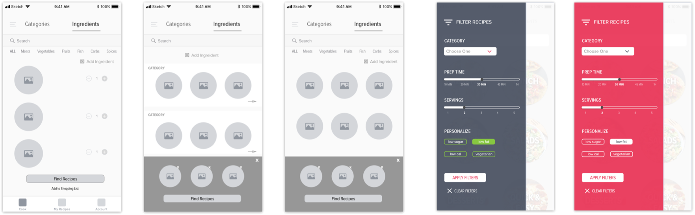

Easy recipe finder for non cooks
Role:
Challenge:
Deciding what to eat can be difficult for non cooks especially when you’re short on time or don’t have the ingredients needed. Current apps don’t consider personal diet preferences and toggling between a googled recipe and the kitchen can be frusterating.
Solution:
Chef O helps users decide what to eat by providing quick and easy recipes catered to their lifestyle or the ingredients they already have. This helps people find healthy home meals that they can cook for themselves or others.
Discovery:
Leading the design process, I survyed users to understand their cooking goals, discovering that 85% of users either didn’t have time to cook before or after work, followed by not having the right ingredients. I also researched various competitors such as Yummly and AllRecipies.com to see what users liked and disliked about these major platforms when it comes to cooking decisions.
User Flows:
Users like Annie want recipes that meet their dietary goals and generally researched recipies for breakfast or dinner. Keeping this in mind, I created user flows that guided the user towards choosing a recipe for time of day or their personal preferences.
Wireframes:
During the wireframe phase I was presented with many challenges such as how to view ingredients and recipes in an intutive way or the best way to categorize ingredients. This is where I tested different versions internally and applied changes.
User Testing:
I tested various elements of the app to ensure non cooks can discover recipes easily. I focused on elements such as visual design, filters, and what information was most important for the user to know.
Ingredient Options Filter Options
Learnings:
During this project, I learned a lot about myself as a designer such as designing to solve a problem for people not just myself. I had to challenge myself to find solutions with conflicting user feedback or complex user goals. In the future, I would like to refine the visual design for Chef O and expand the experience to include all aspects of physical health, not just healthy eating.